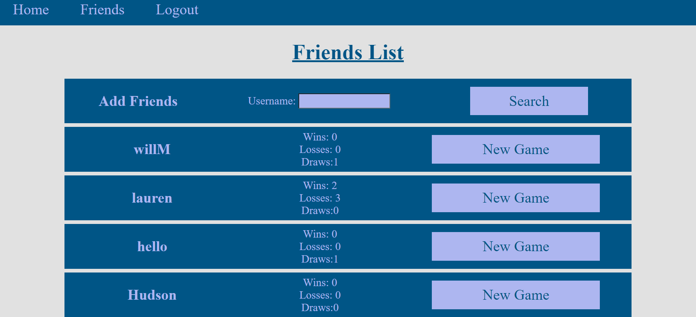
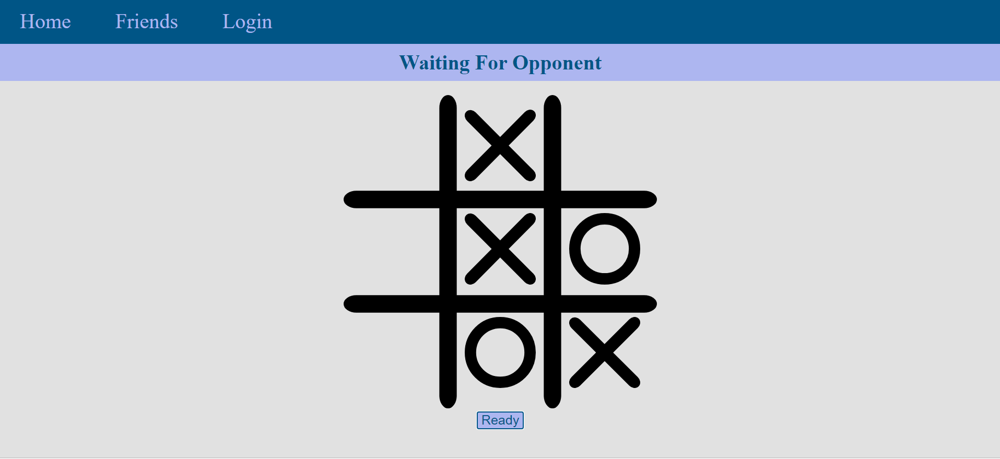

Jacob Davis
Tic Tac Toe
This website allows users to play tic tac toe against each other in real time using WebSockets. Users can create an account, add friends, and challenge their friends to games or play against random opponents. This website was created by a team of three people.
Live Website:
https://tic-tac-too-3d5e87deda0c.herokuapp.com/GitHub Page:
https://github.com/WillRMorris/tic-tac-tooThis website was built using Node.js, Express, Sessions, Handlebars, MySQL, Sequelize, and WebSockets via the Express-ws library.
I wrote all of the code dealing with WebSockets on the front and back ends and the tic tac toe game itself. I did most of the front end and UI.
Friends System
Users can send friend requests to other users. Once they are friends they can challenge them to games of tic tac toe. Wins, losses, and draws with each friend are saved and displayed on the friends list.
Real Time Gameplay
Users can play games of tic tac toe in real time with other players online.
